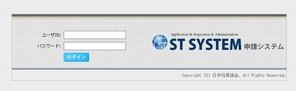
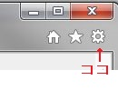
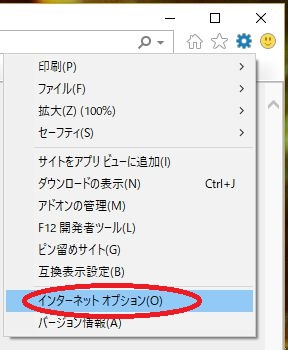
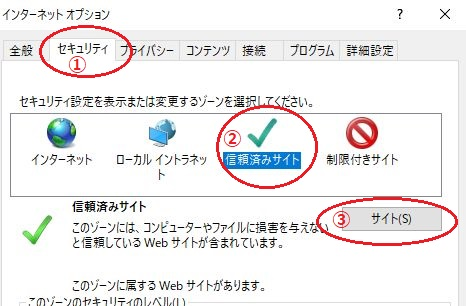
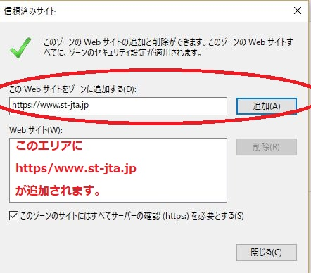

ST申請システム（URL：https://www.st-jta.jp）を
“信頼済みサイト”に登録をしてください。
IE（インターネット・エクスプローラー）のバージョンによっては、設定不要となりますが、
最新バージョン（11.64以降）については、この登録をしていないと、ボタン（「選択」「一時保存」「送信」「印刷」）が効かない現象が発生してしまいます。
古いバージョンをお使いの場合でも、念のため下記の設定をお願いいたします。
1．ブラウザ（IE）のツールを開きます。
（１）ブラウザ（IE）より、ST申請システムを開きます（IDパスワードを入力する画面で結構です）。
URL https://www.st-jta.jp/st/sts/frmSTS0010.aspx

（2）ブラウザの右上のアイコンより、歯車のマークをクリックします。

2．インターネットオプションクリックします。

3. 信頼済みサイトを登録
①「セキュリティ」タブをクリック →
②「信頼済みサイト」のゾーンをクリック
③「サイト」をクリックします。

さらに、[このWebサイトをゾーンに追加する]に申請システムのURL「https://www.st-jta.jp」が出ていることを確認して、「追加」をクリックし「閉じる」で完了です。
(違うURLが表示されていた場合は、次の赤文字のURL https://www.st-jta.jpをコピーアンドペースト、または入力し追加してください)。
（当協会の公式サイト「ドメイン名 toys.or.jp」とは異なりますので、ご注意ください。）
